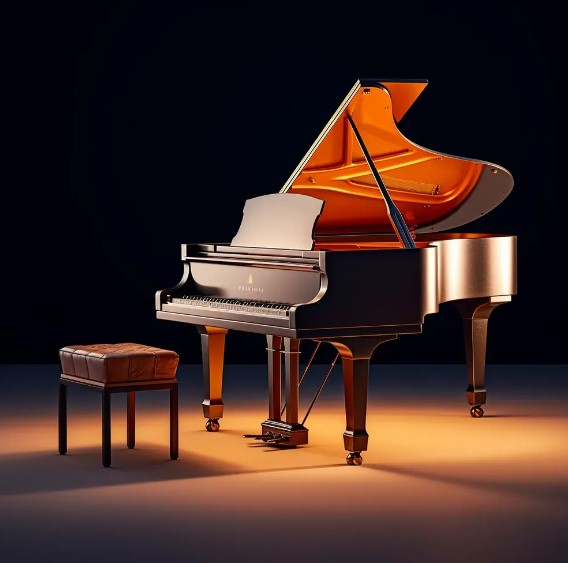

Piano

História
O piano é muito conhecido hoje em dia talvez por ter sido o principal instrumento usado por importantes músicos da história, como Mozart e Beethoven. Munido de um tecladogeralmente composto por 88 teclas, o mesmo é um instrumento musical de corda percutida. O som é gerado pelo acionamento dos martelos de madeira, que percutem as cordas em seu interior.
O piano foi criado pelo inventor italiano Bartolomeu Cristofori, por volta de 1700. Cristofori procurou idealizar uma evolução do cravo, um instrumento bastante parecido com o piano, com a diferença de suas cordas serem tangidas por bicos de penas. A principal aspecto que diferencia os dois instrumentos é o fato de o piano ser capaz de emitir sons suaves ou fortes, de acordo com a intensidade que é tocado, enquanto o cravo, não. É aí que encontramos a origem da palavra “piano”, que em italiano significa “suavemente”.
Você sabia?
O Piano e o Cinema
Esse instrumento tem um lugar especial no cinema. Durante a era do cinema mudo, pianistas tocavam ao vivo durante a exibição dos filmes para acompanhar as cenas e criar atmosfera. Sendo assim, esse estilo de apresentação ao vivo é conhecido como “piano de cinema” e ainda existe em alguns cinemas hoje em dia.
O Piano e a Matemática
Você sabia que tocar este instrumento pode ajudar a desenvolver habilidades matemáticas? Estudos mostram que o aprendizado de música pode melhorar a habilidade de uma pessoa em lidar com números e resolver problemas matemáticos. Isso ocorre porque a música envolve padrões rítmicos e melódicos que estimulam o cérebro e melhoram a habilidade matemática.